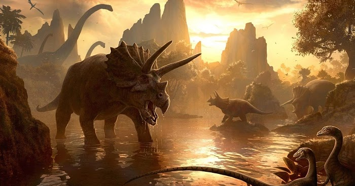
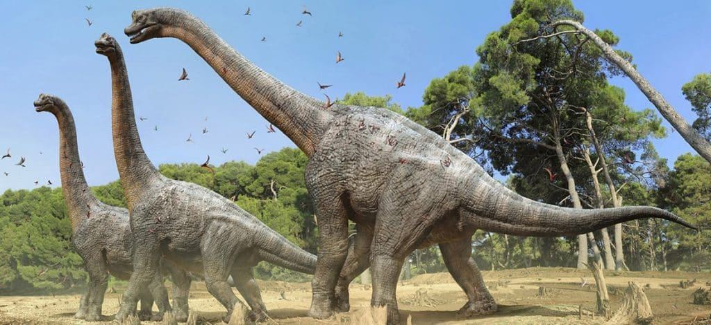

os dinossauros estavam aqui muito antes de nós humanos, eles viveram até 65 milhões de anos atras quando foram extintos, de todas as cores, especies, estilos e tamnhos diferentes. Esses dinossauros viveram em tres periodos, o periodo cretáceo, jurássico e o triássico, e são dividos em vários grupos, existem os grupos dos carnivoros, dos onivoros, dos herbivoros, os de periodos diferentes, os marinhos, os voadores, os terrestre, eles podem ser divididos em infinitos grupos e classes, então venha conhecer um pouco mais sobre eles
'

herbivoros

Os dinossauros herbívoros eram os dinossauros que se alimentavam a base de plantas e suas variantes
Ao contrario dos dinossauros herbivoros os dinossauros carnivoros tinham sua alimentação a base de carne, alguns apenas carne vermelha, já outros envolviam peixes em sua alimentação